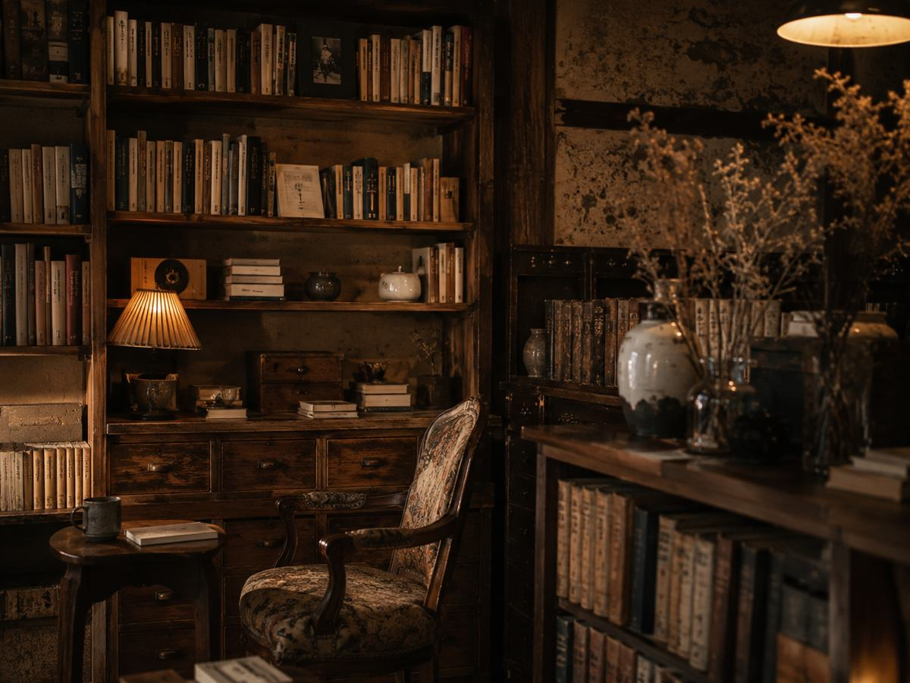
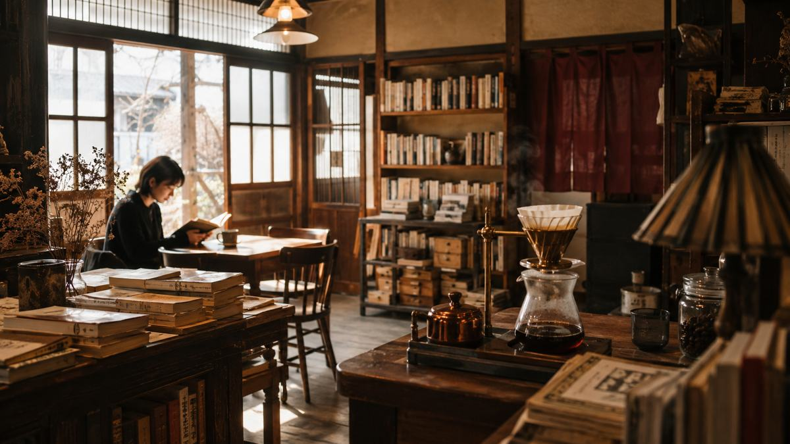
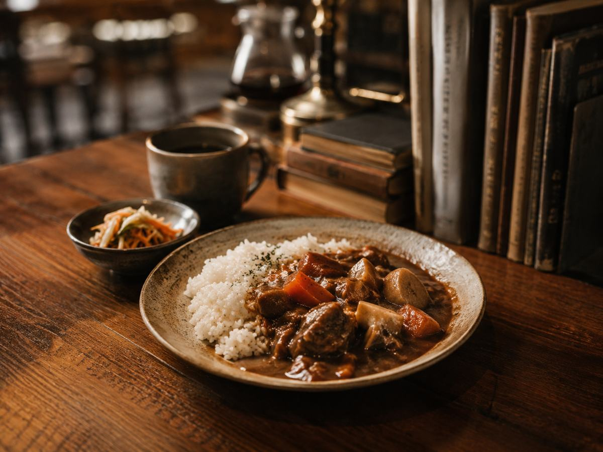
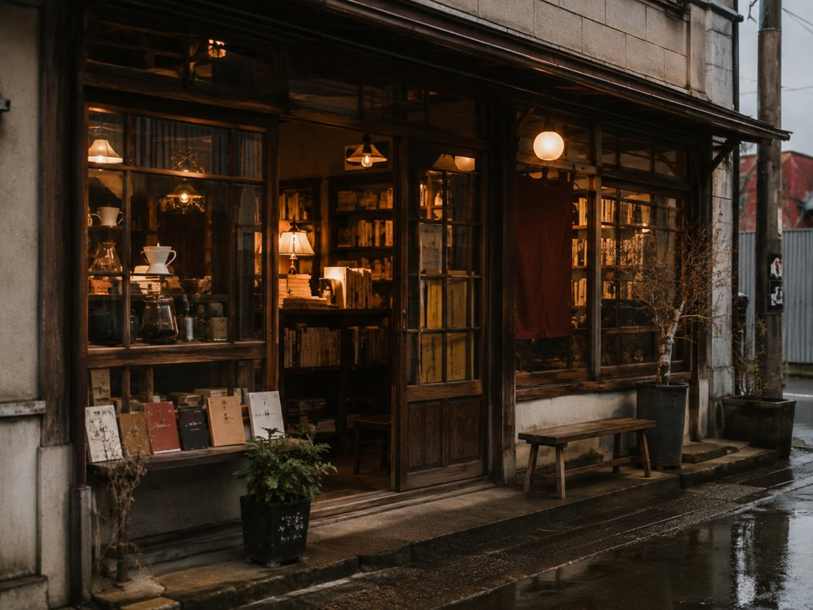

本・アンティーク・手淹れ珈琲が重なる空間
テーブルごとにテーマを決めた本が並び、注文を受けてから豆を挽いてハンドドリップする珈琲が楽しめる、独自の世界観の店内です。
本と珈琲、両方の魅力を同時に味わえます。
秋田市中通
-本と珈琲とインクの匂い-
読みかけのページと、淹れたての一杯を。
本とアンティークに囲まれた店内で、注文を受けてから豆を挽くハンドドリップ珈琲を。Wi-Fiと電源のある席で、読書や仕事をしながらゆっくり過ごせるブックカフェです。
※背景は店舗の世界観を表現したイメージ画像です
※店舗の世界観を表現したイメージ画像です
店内にはテーブルごとにテーマを決めた本が並び、注文を受けてから豆を挽いてハンドドリップで淹れる一杯を楽しめます。本と珈琲、そしてインクの匂いに包まれながら過ごす時間を大切にしています。
確認できる公式情報をもとに整理した、3つの特徴です。

テーブルごとにテーマを決めた本が並び、注文を受けてから豆を挽いてハンドドリップする珈琲が楽しめる、独自の世界観の店内です。
本と珈琲、両方の魅力を同時に味わえます。Wi-Fiと電源のある席があり、読書や仕事をしながら長時間過ごしやすいブックカフェとして案内されています。
一人の時間も、作業の合間の一息にも使いやすい環境です。店内の貸本コーナーは1冊につき50円の募金制で、集まった募金は全額「絵本を届ける運動」へ寄付されています。
本を借りて読むことが、そのまま社会貢献につながります。「秋田駅前でゆったり過ごせる場所を作りたい」という思いから生まれたブックカフェです。
※店舗の世界観を表現したイメージ画像です

※店舗の世界観を表現したイメージ画像です
一押し商品
ごはんと煮込みシチューを合わせた、ボリュームのある食事メニューです。
しっかり食事を楽しみたい方、ランチタイムに立ち寄りたい方に向いています。
※店舗の世界観を表現したイメージ画像です
一押しサービス
店内の本を読みながら、注文後に豆を挽いて淹れるハンドドリップコーヒーを楽しめます。貸本の募金は「絵本を届ける運動」へ寄付される仕組みです。
一人でゆっくり読書したい方、静かに過ごしたい方におすすめです。
テーブルごとにテーマの異なる本の中から、気になる一冊を手に取れます。
注文後に豆を挽くハンドドリップならではの、香りが立つひとときです。
長時間過ごしやすい環境で、仕事や読書に集中できます。
今日の気分や好みに合わせて、本と珈琲の組み合わせのヒントを紹介する試作デモです。既存の魅力を生かした、小さく試せる新サービスの提案です。
本と珈琲のペアリング診断サービス（案）
本内容は店舗運営者向けの導入提案です。現在提供中のサービスではありません。
最新の営業情報は、店舗の公式案内をご確認ください。
本と珈琲に囲まれたひとときを、ぜひ体験しにお越しください。

※店舗の世界観を表現したイメージ画像です